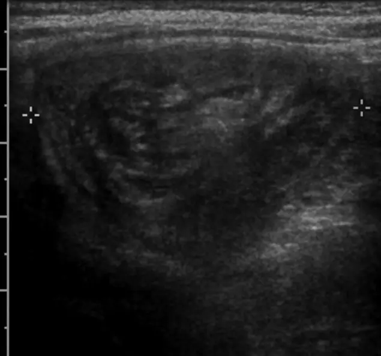

DX.10 — Gastro-entérite aiguë
1. Définition et sémantique
Symptôme général : fièvre, frissons, hyperthermie
- La voie suit les maladies infectieuses et parasitaires
- TumeursLe chapitre II de la CIM-10 comprend les tumeurs bénignes et malignes, dont certaines donnent une fièvre prolongée.
- Maladies du sang et des organes hématopoïétiquesLe chapitre III de la CIM-10 comprend les anémies, les troubles de la coagulation et les déficits immunitaires.
- Maladies endocriniennes, nutritionnelles et métaboliquesLe chapitre IV de la CIM-10 comprend par exemple l'hyperthyroïdie, qui peut élever la température.
- Maladies du système nerveuxLe chapitre VI de la CIM-10 comprend par exemple la méningite, qui associe fièvre et raideur de nuque.
- Maladies de l'appareil circulatoireLe chapitre IX de la CIM-10 comprend par exemple l'endocardite, qui donne une fièvre persistante.
- Maladies de l'appareil respiratoireLe chapitre X de la CIM-10 comprend par exemple la pneumonie ou la bronchite, qui associent fièvre et toux.
- Maladies de l'appareil digestifLe chapitre XI de la CIM-10 comprend par exemple l'appendicite ou la cholécystite, avec fièvre et douleur abdominale.
- Maladies de la peau et du tissu cellulaire sous-cutanéLe chapitre XII de la CIM-10 comprend par exemple l'érysipèle ou la cellulite infectieuse.
- Maladies du système ostéo-articulaire, des muscles et du tissu conjonctifLe chapitre XIII de la CIM-10 comprend par exemple l'arthrite septique ou les connectivites.
- Maladies de l'appareil génito-urinaireLe chapitre XIV de la CIM-10 comprend par exemple la pyélonéphrite, qui associe fièvre et douleur lombaire.
Certaines maladies infectieuses et parasitairesCIM-10, chap. I
- Maladies intestinales infectieuses
- TuberculoseLe groupe A15–A19 correspond à l'infection à mycobactéries, qui donne une fièvre prolongée avec toux.
- Certaines zoonoses bactériennesLe groupe A20–A28 correspond à des infections transmises par l'animal, comme la brucellose ou la leptospirose, avec fièvre.
- Autres maladies bactériennesLe groupe A30–A49 correspond à des infections comme la lèpre, la scarlatine, la méningococcie ou la septicémie.
- Infections à transmission essentiellement sexuelleLe groupe A50–A64 comprend par exemple la syphilis ou la gonococcie.
- Autres maladies à spirochètesLe groupe A65–A69 comprend par exemple la borréliose de Lyme.
- Autres maladies dues à des ChlamydiaLe groupe A70–A74 comprend par exemple la psittacose.
- RickettsiosesLe groupe A75–A79 correspond à des infections transmises par les poux, puces ou tiques, avec fièvre et éruption.
- Infections virales du système nerveux centralLe groupe A80–A89 comprend par exemple la méningo-encéphalite virale.
- Fièvres virales transmises par des arthropodes et fièvres hémorragiques viralesLe groupe A90–A99 comprend par exemple la dengue ou la fièvre jaune.
- Infections virales caractérisées par des lésions de la peau et des muqueusesLe groupe B00–B09 comprend par exemple la varicelle, la rougeole ou l'herpès.
- Hépatite viraleLe groupe B15–B19 correspond à une inflammation virale du foie, avec fièvre au début.
- Maladie due au virus de l'immunodéficience humaine [VIH]Le groupe B20–B24 correspond à une infection virale qui affaiblit l'immunité.
- Autres maladies viralesLe groupe B25–B34 comprend par exemple la mononucléose infectieuse ou le cytomégalovirus.
- MycosesLe groupe B35–B49 correspond à des infections fongiques, par exemple la candidose.
- Maladies dues à des protozoairesLe groupe B50–B64 comprend par exemple le paludisme.
- HelminthiasesLe groupe B65–B83 correspond à des infections par des vers parasites.
- Pédiculose, acaridiase et autres infestationsLe groupe B85–B89 comprend par exemple la gale.
- Séquelles de maladies infectieuses et parasitairesLe groupe B90–B94 correspond aux conséquences tardives d'une infection.
- Agents bactériens, viraux et autres agents infectieuxLe groupe B95–B98 correspond aux agents désignés comme cause d'une maladie classée ailleurs.
- Autres maladies infectieusesLe groupe B99 correspond à des infections autres ou non précisées.
Maladies intestinales infectieusesCIM-10, A00–A09
- La cible est la gastro-entérite et colite d'origine infectieuse présumée
- CholéraLe groupe A00 correspond à une diarrhée aqueuse profuse due à Vibrio cholerae.
- Fièvres typhoïde et paratyphoïdeLe groupe A01 correspond à une infection à Salmonella Typhi ou Paratyphi, avec fièvre prolongée.
- Autres salmonellosesLe groupe A02 correspond à une infection intestinale à salmonelles non typhiques.
- ShigelloseLe groupe A03 correspond à une dysenterie bacillaire avec diarrhée sanglante.
- Autres infections intestinales bactériennesLe groupe A04 comprend par exemple Campylobacter ou Escherichia coli.
- Autres intoxications bactériennes d'origine alimentaireLe groupe A05 comprend par exemple la toxine de Staphylococcus aureus ou de Clostridium.
- AmibiaseLe groupe A06 correspond à une infection intestinale à Entamoeba histolytica.
- Autres maladies intestinales dues à des protozoairesLe groupe A07 comprend par exemple la giardiase.
- Infections intestinales virales, autres et sans précisionLe groupe A08 comprend par exemple l'infection à rotavirus ou à norovirus.
Gastro-entérite et colite d'origine infectieuse présuméeCIM-10, A09
La gastro-entérite aiguë est une inflammation infectieuse de l'estomac et de l'intestin, avec diarrhée, vomissements, douleurs abdominales, parfois fièvre. Elle guérit en général spontanémentL'étude BUGS définit la gastro-entérite aiguë par diarrhée, vomissements, douleurs ou crampes abdominales, fièvre, déshydratation, nausées ou perte d'appétit. Elle est le plus souvent spontanément résolutive, mais elle charge le système de santé.4. Les norovirusVirus à ARN très contagieux : 10 à 100 particules suffisent à contaminer412. Ils causent des vomissements en jets et des diarrhées fortes pendant 2 à 3 jours.1 et les rotavirusVirus à ARN, première cause de diarrhée aiguë du jeune enfant. Presque tous les enfants les rencontrent avant 3 ans.2 sont les virus en cause chez l'enfant et l'adulte. Des bactéries et des parasites peuvent aussi être en cause.
Notions voisines à ne pas confondre : intoxication alimentaireMaladie par toxine préformée dans l'aliment. Le début est précoce, en quelques heures, sans période d'incubation longue. La cause est l'aliment, pas un virus transmis de personne à personne., diarrhée du voyageurDiarrhée après un séjour dans un pays à hygiène précaire. Elle est le plus souvent bactérienne. Elle impose de penser aussi au paludisme si de la fièvre persiste. et colite pseudomembraneuseColite à Clostridioides difficile après antibiotique. Elle donne une diarrhée parfois avec fièvre. Le lopéramide est contre-indiqué.8. L'expression « grippe intestinale » est un nom courant de la gastro-entérite, non de la grippe vraie.
2. Épidémiologie (Suisse, puis Europe)
Selon l'OFSP, 400 000 personnes par an sont atteintes de diarrhée avec vomissements à norovirus en Suisse1. Les cas isolés ne sont pas à déclaration obligatoire, seuls les foyers de cas le sont. Les infections surviennent surtout en hiver. Les enjeux sont la déshydratation du nourrisson, les flambées en institutions et l'absentéisme. Il n'existe aucun dépistage ; la vaccination contre le rotavirus et l'hygiène préviennent1,2.
| Notion | Donnée sourcée (population, année) | Enjeu pour le médecin |
|---|---|---|
| Incidence en Europe | 0,3 à 1,5 épisode par personne et par an dans plusieurs pays européens4. | L'incidence suisse est supposée comparable ; la donnée directe manque. |
| Consultations en Suisse | Environ 175 000 personnes ont consulté pour une gastro-entérite en Suisse en 2014, estimation du réseau Sentinella4. | La majorité des épisodes ne vient pas chez le médecin. |
| Part des épisodes avec consultation | Une minorité des épisodes mène à une consultation dans les études européennes. | Les chiffres de déclaration sous-estiment la charge réelle. |
| Norovirus | 400 000 cas par an, estimation OFSP, Suisse1. | Flambées en familles, hôpitaux, foyers, casernes, écoles. |
| Rotavirus, enfants de moins de 5 ans1 | Environ 6 600 malades et 1 000 hospitalisations par an, estimation OFSP, Suisse2. | Premier agent des diarrhées sévères du nourrisson ; vaccination disponible. |
| Mortalité | Aucun décès par rotavirus ni séquelle durable observés en Suisse. Le norovirus guérit en 2 à 3 jours2. | La mortalité est faible ; elle vise surtout le nourrisson et la personne âgée déshydratés. |
| Séquelles | 11 % des entérites infectieuses évoluent en syndrome de l'intestin irritable post-infectieux4. | Le médecin prévient d'un risque de troubles prolongés. |
| Âge et sexe | Âge : enfants de moins de 5 ans surtout atteints par les rotavirus4. | Le nourrisson et la personne âgée se déshydratent le plus vite. |
| Fréquence parmi les causes de fièvre | Le réseau Sentinella estime qu'environ 175 000 personnes ont consulté pour une gastro-entérite en Suisse en 2014, ce qui en fait un motif fréquent de consultation en premier recours4. | L'ordre des diagnostics de ce lot n'est pas un ordre de prévalence. |
3. Physiopathologie
Cascade de la gastro-entérite : moléculaire, cellulaire, tissulaire, clinique ; amorce, développement, installation, maintien.
• Amorce (niveau moléculaire). Le germe entre par la bouche : mains souillées, aliment ou eau contaminés, surfaces. Il résiste à l'environnement.
• Développement (niveau moléculaire puis cellulaire). Le virus infecte les entérocytes de la villosité. Les bactéries sécrétrices libèrent des toxines qui ouvrent les canaux de sécrétion. Les bactéries invasives entrent dans la paroi.
• Installation (niveau cellulaire puis tissulaire). Les villosités détruites absorbent mal le sucre et l'eau. Les sucres restent dans la lumière et attirent l'eau. La paroi inflammée est la source du sang et du pus dans les selles. La diarrhée devient aqueuse ou dysentérique.
• Maintien et complications (niveau clinique). Les pertes hydriques et électrolytiques causent la déshydratation. Le cotransporteur sodium-glucose reste intact : une solution de réhydratation oraleLa DCI est la solution de réhydratation orale glucose-électrolytes (Normolytoral®, n° 43916). Elle appartient à la classe des solutions de réhydratation orale (ATC A07CA). Ce sont des sels de réhydratation orale selon la composition de l'OMS. Normolytoral® est le chef de file. Son indication AIPS est l'apport d'eau et d'électrolytes dans les diarrhées aiguës, y compris du voyageur. L'AIPS prévoit 1 sachet dans 200 mL d'eau et une réhydratation de 40 à 50 mL/kg en 4 à 6 h7. L'entretien dure au plus 24 h7. Il vaut 40 mL/kg chez l'adulte, jusqu'à 75 mL/kg en 1re année de vie (dès 4 semaines), 60 mL/kg de la 2e à la 5e année, puis 40 mL/kg7. La durée est de 24 h, jamais plus de 30 h7. Le produit est interdit sous 4 semaines7. compense les pertes. Un EHEC peut déclencher un SHU. Une entérite sur dix évolue en syndrome de l'intestin irritable4.
Le tableau suivant relie chaque lésion de la gastro-entérite à l'examen qui la montre et au traitement qui la corrige.
| Lésion ou perturbation | Exploration qui la montre | Thérapeutique et mécanisme |
|---|---|---|
| Perte d'eau et de sodium par diarrhée et vomissements | Pli cutané, muqueuses, pouls, poids ; ionogramme si grave | Normolytoral®Il porte le n° 43916 chez Swissmedic. La fiche complète suit la première mention. apporte glucose et sodium par le cotransporteur ; l'eau suit74. |
| Vomissements par stimulation des récepteurs 5-HT374 | Observation de la tolérance orale | L'ondansétronLa DCI est l'ondansétron (Zofran®, n° 50709). Il appartient à la classe des antiémétiques, antagonistes des récepteurs sérotoninergiques de type 3 (ATC A04AA01). Ce sont des sétrons. Les chefs de file sont l'ondansétron et le granisétron (A04AA02). Ses indications AIPS sont les nausées et vomissements de la chimiothérapie, de la radiothérapie et postopératoires. La gastro-entérite n'est pas une indication de l'AIPS. La prévention postopératoire de l'adulte reçoit 4 mg en injection intraveineuse lente9. L'usage dans la gastro-entérite reste hors AIPS et suit la recommandation ESPGHAN. Le produit allonge le QTc9. Il n'est pas recommandé pendant la grossesse9. bloque ces récepteurs et stoppe les vomissements ; il évite une perfusion5. |
| Hypermotilité intestinale (diarrhée non invasive) | Selles sans sang, apyrétique | Le lopéramideLa DCI est le lopéramide (Imodium®, n° 40363). Il appartient à la classe des antidiarrhéiques, inhibiteurs de la motricité intestinale (ATC A07DA03). Ce sont des opioïdes périphériques qui ralentissent le transit. Les chefs de file sont le lopéramide et le diphénoxylate (A07DA01). Son indication AIPS est le traitement symptomatique de la diarrhée aiguë et chronique. Dans la diarrhée aiguë, l'adulte reçoit 4 mg au départ, puis 2 mg après chaque selle liquide, au maximum 16 mg par jour8. L'enfant de 6 à 12 ans reçoit 2 mg au départ, puis 2 mg après chaque selle liquide, au maximum 6 mg par 20 kg sans dépasser 16 mg8. Le produit est contre-indiqué sous 6 ans8. Il faut l'arrêter sans amélioration en 2 jours8. agit sur les récepteurs opioïdes de l'intestin et ralentit le transit. |
| Invasion bactérienne : sang, fièvre élevée | Coproculture ou PCR sur selles | L'antibiotique ne se donne que dans des cas exceptionnels3. |
| Absence d'immunité contre le rotavirus du nourrisson | Âge, carnet de vaccination | Rotarix®La DCI est un vaccin oral vivant atténué contre le rotavirus (Rotarix®, n° 60150). Il appartient à la classe des vaccins antidiarrhéiques viraux (ATC J07BH01). Ce sont des vaccins viraux oraux. Rotarix® (vaccin monovalent) est le chef de file. Son indication AIPS est la prévention de la gastro-entérite à rotavirus dès 6 semaines de vie11. Le schéma comprend 2 doses par voie orale, séparées d'au moins 4 semaines11. La 1re dose se donne dès 6 semaines, la 2e avant 16 semaines si possible et avant 24 semaines au plus tard11. Il ne faut jamais injecter ce vaccin11. induit une immunité orale avant la 24e semaine. |
| Fièvre et douleurs | Température mesurée | Le paracétamolLa DCI est le paracétamol (Dafalgan®, n° 47503). Il appartient à la classe des analgésiques et antipyrétiques (ATC N02BE01). Ce sont des anilides. Le paracétamol est le seul représentant et le chef de file. L'AIPS l'indique pour les douleurs légères à modérées et pour le traitement symptomatique de la fièvre. L'adulte et l'enfant de plus de 12 ans (> 40 kg) reçoivent 500 à 1000 mg par prise, à 4 à 8 h d'intervalle, au maximum 4000 mg par jour10. De 30 à 40 kg, la dose est de 400 à 600 mg par prise, au maximum 2000 mg par jour10. De 22 à 30 kg, elle est de 300 à 500 mg par prise, au maximum 1500 mg par jour10. corrige la fièvre et la douleur. |
4. Démarche diagnostique
Le médecin exclut d'abord ce qui menace la vie, puis il évalue l'hydratation, puis il cherche l'agent seulement si la conduite change. L'ESPGHAN écrit que les examens ne sont en général pas nécessaires3.
Étape 1 — Chercher les drapeaux rouges devant la gastro-entérite. Chaque drapeau est cliquable : sa fenêtre dit pourquoi il est rouge dans ce tableau.
| Drapeau rouge | Signe ou examen qui tranche | Piège classique | Conduite immédiate |
|---|---|---|---|
| 🚩 Choc ou déshydratation sévèreLe volume circulant est insuffisant : pouls rapide, extrémités froides, conscience altérée. Le patient décompense vite, surtout le nourrisson. | Pouls, recoloration capillaire, pression artérielle, conscience | Attendre que l'enfant boive pour agir. | Réhydratation intraveineuse urgente, appel du 144. |
| 🚩 Douleur abdominale localisée, défense, ventre de boisUn abdomen chirurgical (appendicite, occlusion) peut débuter comme une gastro-entérite. La diarrhée n'élimine pas une urgence chirurgicale. | Palpation abdominale, échographie | Attribuer la douleur à la gastro-entérite. | Avis chirurgical immédiat. |
| 🚩 Sang dans les selles, fièvre élevéeEntérite invasive (Salmonella, Shigella, Campylobacter, EHEC) : la paroi est atteinte ; l'antidiarrhéique est dangereux.8 | Selles sanglantes, fièvre, coproculture | Donner du lopéramide. | Pas de lopéramide ; bilan ; EHEC : surveiller reins et sang. |
| 🚩 Vomissements bilieux ou en jet chez le nourrissonUne occlusion ou une invagination se cache derrière ces signes. Le temps compte.11 | Abdomen, selles « en gelée de groseille », échographie | Prendre les vomissements pour un virus. | Imagerie et avis chirurgical. |
| 🚩 Confusion, raideur de nuque, léthargieMéningite ou sepsis : une gastro-entérite avec fièvre élevée peut masquer ces maladies.3 | Raideur de nuque, pétéchies | Penser « virus » trop vite. | Voir DX.11 et DX.123. |
| 🚩 Immunodépression, grossesse, âge extrêmeCes patients se déshydratent et s'infectent plus gravement. L'hospitalisation se décide plus tôt. | Anamnèse | Traiter comme un adulte sain. | Seuil d'hospitalisation bas. |
| 🚩 Diarrhée après antibiotique ou retour de voyageAprès antibiotique : Clostridioides difficile. Après voyage : bactérie, parasite, paludisme. Chaque cause a son traitement.8 | Anamnèse, tests sur selles | Traiter symptomatiquement seulement. | Test sur selles ; voir DX.6 si fièvre persistante8. |
Étape 2 — En l'absence de drapeau rouge. Le médecin pèse le patient et note le niveau de déshydratation. Il apprécie la tolérance orale : vomissements, soif, boissons prises. Il commence la réhydratation orale sans attendre un résultat de laboratoire3. Il cherche l'agent seulement en cas de sang, de fièvre élevée, de foyer ou de terrain fragile.
5. Anamnèse ciblée et drapeaux rouges
| Question clé | Raison physiopathologique | Décision qui change |
|---|---|---|
| Combien de selles et de vomissements par jour ?Le volume perdu détermine la déshydratation. | Les pertes dépassent l'apport et vident le secteur vasculaire. | Pertes élevées : réhydratation encadrée, éventuellement perfusion. |
| Début brutal avec vomissements en jets ?C'est le tableau du norovirus : incubation de 12 à 48 h, guérison en 2 à 3 jours.1 | Le virus détruit les entérocytes en quelques heures. | Évolution attendue : traitement symptomatique. |
| Sang ou glaires dans les selles ?Ils révèlent une atteinte de la paroi par une bactérie invasive.8 | La paroi inflammée saigne. | Pas de lopéramide ; chercher l'agent. |
| Fièvre élevée ?Elle accompagne les entérites invasives et le rotavirus de l'enfant.2 | Les cytokines élèvent la température. | Chercher une cause bactérienne ou un autre foyer fébrile. |
| Cas semblables dans l'entourage ?Les norovirus passent d'une personne à l'autre dans les espaces clos.1 | La charge virale est très contagieuse. | Isolement et hygiène ; signaler une flambée. |
| Aliments suspects, repas collectif, eau ?Une toxine ou une bactérie alimentaire donne un début précoce. | L'inoculum alimentaire explique un début rapide. | Foyer alimentaire : déclarer et chercher l'agent. |
| Voyage, antibiotique récent, hospitalisation ?Le voyage expose aux bactéries et parasites ; l'antibiotique favorise Clostridioides difficile.8 | Le microbiote perturbé laisse une bactérie toxinogène proliférer. | Test sur selles ; pas de lopéramide si colite. |
| Âge, grossesse, maladie chronique, immunodépression ?Ces terrains compliquent la déshydratation et l'infection.3 | Les réserves hydriques et l'immunité sont limitées. | Surveillance rapprochée ; seuil d'hospitalisation bas. |
| Dernier pipi, boit-il, léthargique ?L'oligurie et la léthargie traduisent une déshydratation modérée à sévère.7 | Les reins retiennent l'eau quand le volume baisse. | Évaluation urgente de l'hydratation. |
Drapeaux rouges actionnables : Si le patient présente un choc ou une léthargie, le médecin lance une réhydratation intraveineuse et appelle le 144. Si la douleur abdominale est localisée ou s'il existe une défense, il demande une échographie et un avis chirurgical. Si du sang s'associe à une fièvre élevée, il demande une coproculture et évite l'antidiarrhéique. Si le nourrisson a des vomissements bilieux, il demande une imagerie et un avis chirurgical. Si une confusion ou une raideur de nuque apparaît, il cherche une méningite ou un sepsis.
6. Examen physique ciblé, région par région
Pour la gastro-entérite, le médecin décrit d'abord le normal attendu, puis le pathologique. Il ne déclare normale aucune région qu'il n'a pas examinée. La valeur diagnostique de cet examen est qualitative.
| Région | Normal attendu | Signes à rechercher (cliquer pour la technique, la valeur et le piège) |
|---|---|---|
| Constantes et poids | Température inférieure à 38 °C ; pouls régulier ; pression artérielle stable ; poids proche du poids habituel ; patient lucide7. | PoidsTechnique : peser le patient nu ou en sous-vêtements, avec la même balance. Valeur : une perte aiguë de 5 à 8 % du poids signe une déshydratation modérée7. Piège : le poids habituel est parfois inconnu : se fier au pli cutané. · Pouls et pression artérielleTechnique : palper le pouls radial une minute ; mesurer la pression couché puis debout. Valeur : pouls rapide et pression en baisse évoquent une hypovolémie. Piège : la fièvre accélère aussi le pouls. · TempératureTechnique : thermomètre rectal chez le nourrisson, tympanique ou buccal sinon. Valeur : une fièvre élevée évoque une entérite invasive ou un autre foyer. Piège : un norovirus ou un rotavirus peuvent aussi donner de la fièvre2. · ConscienceTechnique : poser des questions simples ; observer la réactivité de l'enfant. Valeur : une léthargie impose une évaluation urgente. Piège : un enfant calme n'est pas forcément rassurant. |
| Tête et bouche | Muqueuses humides ; yeux non enfoncés ; larmes présentes ; fontanelle plane chez le nourrisson. | Muqueuses et langueTechnique : inspecter la langue et l'intérieur des joues. Valeur : une langue sèche évoque la déshydratation. Piège : la respiration buccale assèche les muqueuses. · Yeux et fontanelleTechnique : inspecter les orbites ; palper doucement la fontanelle, enfant assis. Valeur : des yeux enfoncés et une fontanelle déprimée signent une déshydratation. Piège : la fontanelle est tendue en cas de pleurs ou de méningite. |
| Peau et circulation | Peau chaude, pli cutané qui s'efface vite ; recoloration capillaire rapide. | Pli cutanéTechnique : pincer la peau de l'abdomen ou de l'avant-bras, puis relâcher. Valeur : un pli qui reste étiré signe une déshydratation. Piège : le pli est peu fiable chez le sujet âgé ou dénutri. · Temps de recoloration capillaireTechnique : presser l'ongle ou le sternum cinq secondes, puis lâcher. Valeur : une recoloration lente évoque un choc. Piège : la peau froide ralentit la mesure. · Éruption, pétéchiesTechnique : inspecter tout le corps. Valeur : des pétéchies orientent vers le SHU ou la méningococcie. Piège : une éruption simple n'est pas forcément grave. |
| Abdomen | Abdomen souple et indolore ; bruits hydro-aériques audibles. | AuscultationTechnique : poser le stéthoscope sur le ventre, un quadrant à la fois. Valeur : des bruits hydro-aériques augmentés accompagnent la gastro-entérite. Piège : un silence abdominal évoque un iléus. · Palpation et défenseTechnique : main à plat, du quadrant le moins douloureux au plus douloureux. Valeur : une défense localisée oriente vers une urgence chirurgicale. Piège : la douleur diffuse crampiforme est fréquente dans la gastro-entérite. · RebondTechnique : relâcher brusquement la main après une pression douce. Valeur : une douleur au relâchement évoque une péritonite. Piège : elle manque chez l'enfant qui pleure. |
| Cou et neurologique | Cou souple ; réactions normales. | Raideur de nuqueTechnique : patient couché ; fléchir doucement la tête vers le sternum. Valeur : une résistance douloureuse évoque une méningite. Piège : chez le nourrisson, le signe manque souvent. |
7. Approche syndromique
Dans la gastro-entérite, cinq syndromes organisent la consultation ; chacun s'éclate en signes fonctionnels (ce que le patient décrit) et en signes physiques (ce que le médecin constate).
| Syndrome | Signes fonctionnels (définition) | Signes physiques (geste de recherche) | Mécanisme |
|---|---|---|---|
| 7.1 Syndrome de gastro-entérite non invasive72 | Diarrhée aqueuseSelles liquides fréquentes, sans sang ni glaires.1 ; vomissementsRejet du contenu gastrique par la bouche, souvent en jet pour le norovirus. ; crampes abdominalesDouleur diffuse qui précède les selles. | Abdomen souple, bruits hydro-aériques augmentés ; absence de défense. | Destruction des entérocytes et sécrétion d'eau dans la lumière. |
| 7.2 Syndrome dysentérique | Selles sanglantes ou glaireusesÉmission de sang et de pus avec ténesme.8 ; fièvre élevéeTempérature mesurée supérieure à 38 °C, avec selles sanglantes : signe d'entérite invasive. ; ténesme. | Température élevée ; douleur du cadre colique ; sang visible dans les selles. | Invasion de la paroi colique par la bactérie. |
| 7.3 Syndrome de déshydratation8 | Soif, oligurieBesoin de boire et rareté des urines.7 ; fatigueAsthénie, somnolence, irritabilité chez l'enfant.3 | Pli cutané persistant ; muqueuses sèches ; tachycardie ; recoloration lente. | Perte de volume et d'électrolytes. |
| 7.4 Syndrome abdominal chirurgical à exclure73 | Douleur localisée et constanteDouleur fixe, qui s'aggrave, non crampiforme. ; vomissements bilieuxVomissements verts, signe d'obstacle.11 | Défense, signe du rebond, météorisme. | Inflammation ou obstruction mécanique du tube digestif. |
| 7.5 Syndrome hémolytique et urémique11 | Pâleur, urines raresÉvoque l'anémie et l'insuffisance rénale après une diarrhée sanglante. | Pâleur, œdème, pétéchies, pression artérielle élevée. | Toxine d'un EHEC, atteinte des petits vaisseaux du rein. |
8. Diagnostic positif et critères
Le diagnostic est clinique : diarrhée et vomissements d'apparition aiguë chez un patient sans maladie digestive chronique3,4. L'ESPGHAN et l'ESPID 2014 écrivent que les examens ne sont en général pas nécessaires et que la déshydratation reflète la gravité3. Le médecin décide de la réhydratation d'après l'état d'hydratation du patient, quel que soit le nombre de selles.
| Affection évoquée | Ce qui suffit | Ce qui ne suffit pas (piège) |
|---|---|---|
| Gastro-entérite virale | Début brutal, vomissements, diarrhée aqueuse, contexte épidémique1. | L'absence de fièvre ne prouve pas la cause virale. |
| Entérite bactérienne invasive | Sang dans les selles, fièvre élevée, coproculture ou PCR positive8. | Des selles sanglantes imposent d'écarter une colite ou un EHEC avant tout traitement. |
| Gravité | Le niveau de déshydratation fixe la conduite : modérée à 5–8 % de perte du poids7. | Un enfant qui boit encore peut être déshydraté. |
| Agent précis | Seuls PCR, culture ou test antigénique l'identifient. | L'agent exact ne change pas la réhydratation. |
Cette classification de gravité est à usage immédiat.
| Forme | Définition clinique | Usage immédiat |
|---|---|---|
| Sans déshydratation | Pertes modérées, patient qui boit, urines normales. | Boire à volonté ; pas de laboratoire. |
| Déshydratation modérée | Perte aiguë de 5 à 8 % du poids ; soif, oligurie, pli cutané7. | Solution de réhydratation orale 40 à 50 mL/kg en 4 à 6 h7. |
| Déshydratation sévère ou choc | Pouls rapide, conscience altérée, extrémités froides. | Perfusion et hospitalisation urgentes. |
9. Examens complémentaires
9.a Gold standard.
Il n'existe pas de gold standard clinique unique. Pour l'agent, la référence est la culture ou la PCR sur selles. Les panels de PCR multiplex atteignent une spécificité d'au moins 0,98 et une sensibilité de 0,93 pour le rotavirus A, face aux méthodes de référence12. L'ESPGHAN précise que ces examens ne sont en général pas nécessaires3.
9.b Première intention.
| Examen | Indication et prescription | Résultat → signification → conduite |
|---|---|---|
| Évaluation clinique et poids | Tout patient avec diarrhée aiguë. Poids, pouls, pli cutané, muqueuses. | Pas de déshydratation → boissons ; modérée → solution de réhydratation orale ; sévère → perfusion. |
| Glycémie capillaire | Enfant léthargique ou qui vomit : un prélèvement capillaire. | Basse → apport de glucose ; normale → suite du bilan. |
9.c Alternatives.
| Examen | Indication | Interprétation et limites |
|---|---|---|
| PCR multiplex sur selles | Sang dans les selles, fièvre élevée, immunodépression, foyer collectif. | Identifie virus, bactéries et parasites ; coûteuse ; réservée aux cas qui changent la conduite. |
| Coproculture | Selles sanglantes ou fièvre élevée. | Positive → agent bactérien ; la décision d'antibiotique reste exceptionnelle3. |
| Test du Clostridioides difficile | Diarrhée après antibiotique ou hospitalisation. | Positif → colite : arrêter le lopéramide8. |
| Selles parasitologiques | Retour de voyage, diarrhée persistante. | Positif → traitement choisi selon le parasite. |
| Alternatives selon le terrain | Grossesse : éviter toute irradiation inutile, échographie plutôt que scanner. Enfant : privilégier la clinique. Insuffisance rénale : éviter les produits de contraste iodés. | Le terrain impose de limiter les examens risqués. |
9.d Deuxième intention.
| Examen | Indication et critère de passage | Résultat → signification → conduite |
|---|---|---|
| Ionogramme et créatinine | Déshydratation sévère, perfusion nécessaire, maladie chronique. En Suisse, 29 % des médecins urgentistes pédiatriques en prescrivent dans un scénario de déshydratation modérée6. | Sodium ou potassium anormaux → correction adaptée ; créatinine élevée → insuffisance rénale prérénale ; valeurs de référence du laboratoire. |
| CRP et hémogramme | Fièvre élevée, douleur localisée ou suspicion d'entérite invasive. | CRP très élevée → cause bactérienne probable ; valeurs de référence du laboratoire. |
| Hémocultures | Fièvre élevée avec hypotension ou immunodépression. | Positives → bactériémie, donc sepsis à traiter (voir DX.11) : traitement immédiat6. |
| Échographie abdominale | Douleur localisée, vomissements bilieux, selles sanglantes du nourrisson. | Invagination ou appendicite → avis chirurgical immédiat. |
Invagination intestinale : signe de la cible à l'échographie. Échographie abdominale, coupe transversale chez l'enfant

Lisez d'abord seul ce cliché (invagination intestinale : signe de la cible à l'échographie) : cherchez vous-même le signe.
La copie annotée (invagination intestinale : signe de la cible à l'échographie) numérote les repères décrits ci-dessous.
- Anneaux concentriques en cible : l'intestin invaginé dans l'intestin sus-jacent
- Une gastro-entérite avec vomissements bilieux ou selles sanglantes du nourrisson peut masquer une invagination.
- L'absence de cible sur une coupe ne l'exclut pas si la clinique persiste.
Ce que l'image décide. Cible chez un nourrisson ou un enfant avec douleur localisée ou vomissements bilieux : avis chirurgical immédiat.
10. Arbre décisionnel
L'arbre écarte d'abord les urgences, puis évalue l'hydratation, puis choisit le traitement.
N0. En cas de choc, de léthargie ou de conscience altérée, le médecin pose une perfusion et appelle le 144 ; sinon il passe à N16.
N1. En cas de douleur localisée, de défense ou de vomissements bilieux, le médecin demande une échographie et un avis chirurgical ; sinon il passe à N26.
N2. En cas de raideur de nuque, de pétéchies ou de fièvre élevée avec confusion, le médecin fait un bilan de méningite et de sepsis (DX.12, DX.11)6. Sinon, il passe à N3.
N3. Si les selles contiennent du sang avec une fièvre élevée, le médecin demande une coproculture ou une PCR et évite le lopéramide ; sinon il passe à N46.
N4. Si la diarrhée suit un antibiotique ou un voyage, le médecin demande un test sur selles (C. difficile, parasites ; DX.6 si fièvre persistante) ; sinon il passe à N56.
N5. Si la déshydratation est modérée, le médecin prescrit la solution de réhydratation orale, 40 à 50 mL/kg en 4 à 6 h7. Si l'échec est oral, il choisit la sonde nasogastrique ou la perfusion, puis passe à N6.
N6. Si des vomissements empêchent l'apport oral, le médecin discute l'ondansétron ; si l'adulte n'a ni sang ni fièvre, il discute le lopéramide ; il passe ensuite à N76.
N7. Si l'état s'améliore, le patient reprend l'alimentation normale ; si l'état s'aggrave ou dure, le médecin réévalue et recherche l'agent6.
11. Prise en charge selon les recommandations suisses
11.A But thérapeutique.
Le but est de compenser les pertes d'eau et de sels, de maintenir l'alimentation et d'éviter la transmission. Pour une déshydratation modérée, la solution de réhydratation oraleIl porte le n° 43916 chez Swissmedic. La fiche complète suit la première mention. apporte 40 à 50 mL/kg dans les 4 à 6 premières heures7. La durée ne dépasse pas 24 h, jamais plus de 30 h713. Le norovirus guérit en 2 à 3 jours, le rotavirus en une semaine environ1,2. L'ESPGHAN recommande de commencer la réhydratation orale dès que possible3.
11.B Moyens pour la gastro-entérite : urgences, ordre du traitement, pharmacologie, non pharmacologique, situations spéciales713.
Urgence — déshydratation sévère ou choc hypovolémique : la conduite suit cet ordre chronologique.
À l'étape 1, le médecin appelle le 144, surveille la conscience, le pouls et la pression, et pose l'oxygène si besoin13. À l'étape 2, il pose une voie veineuse et débute la réhydratation intraveineuse, avec un volume et un débit selon le protocole local13. Les schémas ultrarapides ne sont pas supérieurs aux schémas standard. À l'étape 3, il mesure l'ionogramme, la glycémie et la créatinine, puis reprend la réhydratation orale dès que le patient boit713. Pour l'ESPGHAN, la voie entérale est supérieure à la voie veineuse. À l'étape 4, ensuite, il hospitalise le patient et recherche l'agent si du sang ou une fièvre élevée est présent13.
Urgence — entérite sanglante avec suspicion de syndrome hémolytique et urémique : la conduite suit cet ordre chronologique.
À l'étape 1, immédiatement, le médecin arrête tout antidiarrhéique, évite les AINS, ne débute pas d'antibiotique avant l'avis spécialisé et demande un hémogramme, la créatinine et un frottis13. À l'étape 2, ensuite, il hospitalise le patient, surveille la diurèse et la pression, et demande un avis néphrologique13. À l'étape 3, en surveillance, il contrôle la créatinine et la diurèse chaque jour13.
Ordre du traitement des formes non compliquées et pourquoi.
• Étape 1 — Mesures générales. Le patient poursuit l'alimentation habituelle, sans changer de régime, laitages compris. Il continue l'allaitement. La reprise précoce de l'alimentation protège l'intestin3.
• Étape 2 — Réhydrater. Normolytoral®Il porte le n° 43916 chez Swissmedic. La fiche complète suit la première mention. : 1 sachet dans 200 mL d'eau ; 40 à 50 mL/kg en 4 à 6 h, puis entretien jusqu'à 40 mL/kg chez l'adulte7. Une solution hypo-osmolaire est le traitement principal selon l'ESPGHAN3. L'enfant qui vomit reçoit de petites quantités fréquentes ; la perfusion est réservée à l'échec de cette stratégie.
• Étape 3 — Vomissements persistants. L'ondansétronIl porte le n° 50709 chez Swissmedic. La fiche complète suit la première mention. arrête les vomissements, évite des hospitalisations et réduit les perfusions chez l'enfant, selon une méta-analyse de 24 études59. Cet usage relève d'une recommandation de l'ESPGHAN, hors AIPS, et le médecin pèse le risque cardiaque avant de prescrire3.
• Étape 4 — Diarrhée gênante chez l'adulte. Le lopéramideIl porte le n° 40363 chez Swissmedic. La fiche complète suit la première mention. : 4 mg au départ, puis 2 mg après chaque selle liquide, maximum 16 mg par jour8. Il est interdit sous 6 ans et en cas de sang ou de fièvre élevée8. Il arrête le lopéramide après 2 jours sans amélioration8.
• Étape 5 — Fièvre ou douleur. Le paracétamolIl porte le n° 47503 chez Swissmedic. La fiche complète suit la première mention. : 500 à 1000 mg par prise chez l'adulte, maximum 4000 mg par jour10. Les AINS exposent aux reins en cas de déshydratation.
• Étape 6 — Antibiotique : exceptionnel. Le médecin ne prescrit pas d'antibiotique en routine, même en cas de fièvre3,6. Les cas particuliers (Shigella, immunodépression, sepsis) relèvent de l'avis infectiologique.
La pharmacologie suisse repose sur l'AIPS.
| Spécialité (marque, DCI) n° Swissmedic | Indication et dose (AIPS) | Contre-indications et précautions majeures | Grossesse et allaitement (AIPS) |
|---|---|---|---|
| Normolytoral® (solution de réhydratation) 43916Il porte le n° 43916 chez Swissmedic. La fiche complète suit la première mention.3 | Diarrhée aiguë : 40 à 50 mL/kg en 4 à 6 h ; entretien au plus 24 h7. | Insuffisance rénale, vomissements incoercibles, trouble sévère de la conscience, choc, anurie ; interdit sous 4 semaines7. | Seulement avec prudence et en cas d'absolue nécessité, à cause de l'alcool benzylique. |
| Imodium® (lopéramide) 40363Il porte le n° 40363 chez Swissmedic. La fiche complète suit la première mention.8 | Diarrhée aiguë de l'adulte : 4 mg puis 2 mg après chaque selle liquide, maximum 16 mg par jour8. | Interdit sous 6 ans, en cas de dysenterie, de colite bactérienne invasive, de colite aux antibiotiques, d'insuffisance hépatique sévère8. | Grossesse : seulement en cas de nécessité absolue. Allaitement : ne pas utiliser. |
| Zofran® (ondansétron) 50709Il porte le n° 50709 chez Swissmedic. La fiche complète suit la première mention.9 | Nausées de la chimiothérapie et postopératoires ; aucune indication AIPS pour la gastro-entérite9. | Syndrome du QT long congénital, apomorphine ; corriger hypokaliémie et hypomagnésémie ; allonge le QTc. | Grossesse : non recommandé ; fentes labio-palatines chez le nouveau-né, 3 cas supplémentaires par 10 000 femmes9. Allaitement : ne pas traiter ou sevrer. |
| Dafalgan® (paracétamol) 47503Il porte le n° 47503 chez Swissmedic. La fiche complète suit la première mention.10 | Fièvre et douleur : 500 à 1000 mg par prise, maximum 4000 mg par jour10. | Insuffisance hépatique grave ; prudence si déshydratation ou clairance de la créatinine inférieure à 50 mL/min10. | Grossesse : dose efficace la plus faible, durée la plus courte. Allaitement : compatible avec prudence. |
Les mesures non pharmacologiques, sociales et professionnelles complètent le traitement.
• Le patient se lave les mains avec du savon, et on désinfecte les surfaces souillées à l'eau de Javel diluée à 0,1 %1.
• Personnes qui préparent des repas : ne pas cuisiner pendant la maladie.
• Le travail en institution sensible (foyer, hôpital, restauration, école) impose une éviction pendant au moins 2 à 3 jours après la fin des symptômes1.
• Arrêt de travail attesté par certificat ; la LAMal prend en charge les soins ; la perte de gain relève de l'assurance d'indemnités journalières. Cette infection ne relève pas de la LAA.
• La conduite est déconseillée par le médecin pendant la déshydratation, les vertiges ou la fatigue8.
Situations spéciales.
| Situation | Conduite (AIPS) |
|---|---|
| Femme enceinte | Normolytoral®Il porte le n° 43916 chez Swissmedic. La fiche complète suit la première mention. avec prudence seulement en cas de nécessité7. lopéramideIl porte le n° 40363 chez Swissmedic. La fiche complète suit la première mention. seulement en nécessité absolue8. ondansétronIl porte le n° 50709 chez Swissmedic. La fiche complète suit la première mention. non recommandé9. paracétamolIl porte le n° 47503 chez Swissmedic. La fiche complète suit la première mention. à la dose la plus faible10. |
| Allaitement | lopéramideIl porte le n° 40363 chez Swissmedic. La fiche complète suit la première mention. : ne pas utiliser8. ondansétronIl porte le n° 50709 chez Swissmedic. La fiche complète suit la première mention. : ne pas traiter ou sevrer9. paracétamolIl porte le n° 47503 chez Swissmedic. La fiche complète suit la première mention. compatible avec prudence10. |
| Nourrisson et enfant | Normolytoral®Il porte le n° 43916 chez Swissmedic. La fiche complète suit la première mention. interdit sous 4 semaines7 ; allaitement poursuivi. lopéramideIl porte le n° 40363 chez Swissmedic. La fiche complète suit la première mention. interdit sous 6 ans8. Rotarix®Il porte le n° 60150 chez Swissmedic. La fiche complète suit la première mention. prévient les formes sévères11. paracétamolIl porte le n° 47503 chez Swissmedic. La fiche complète suit la première mention. selon le poids, maximum 2000 mg par jour de 30 à 40 kg10. |
| Personne âgée | Risque élevé de déshydratation, d'insuffisance rénale et de chute. Seuil d'hospitalisation bas. Surveillance de la créatinine. |
| Insuffisance hépatique | lopéramideIl porte le n° 40363 chez Swissmedic. La fiche complète suit la première mention. interdit si sévère8. paracétamolIl porte le n° 47503 chez Swissmedic. La fiche complète suit la première mention. interdit si grave10. |
| Insuffisance rénale | Normolytoral®Il porte le n° 43916 chez Swissmedic. La fiche complète suit la première mention. interdit en insuffisance rénale7. paracétamolIl porte le n° 47503 chez Swissmedic. La fiche complète suit la première mention. : consulter si clairance inférieure à 50 mL/min10. Perfusion à doses adaptées par l'équipe. |
11.C Surveillance.
| Quoi | Quand | Seuil d'alerte |
|---|---|---|
| Diurèse et soif | Chaque jour | Mictions rares chez l'enfant, urines très foncées → avis médical. |
| Poids | À la consultation et après la réhydratation | Perte persistante du poids → perfusion. |
| Diarrhée | Chaque jour | Sang, fièvre élevée ou durée prolongée → examens. |
| Lopéramide | Pendant le traitement | Constipation, ballonnements ou iléus → arrêt immédiat ; aucune amélioration en 2 jours → arrêt8. |
| Ondansétron (si prescrit) | Pendant le traitement | Palpitations, syncope → ECG et arrêt ; QTc long → pas de prescription. |
11.D Le pronostic et les critères de guérison conditionnent la sortie.
Le norovirus guérit en 2 à 3 jours, le rotavirus en une semaine environ ; aucune séquelle durable ni décès n'ont été observés avec le rotavirus en Suisse1,2. Un malade sur dix environ a ensuite un syndrome de l'intestin irritable4. La sortie suppose une boisson orale suffisante, une diurèse normale et des pertes en baisse. L'ESPGHAN réserve l'hospitalisation aux enfants qui exigent une réhydratation entérale ou parentérale3.
12. Prévention
Le risque épidémiologique du point 2 justifie trois niveaux de prévention, centrés sur l'hygiène et la vaccination du nourrisson.
| Niveau | Recommandation et source | Geste concret et population cible |
|---|---|---|
| Primaire (vaccination) | OFSP et CFV : vaccination orale contre le rotavirus, complémentaire depuis le 1er janvier 2024, remboursée par l'assurance obligatoire2. | 2 doses à 2 et 4 mois ; 1re dose dès 6 semaines et au plus tard à 15 semaines et 6 jours ; intervalle de 4 semaines ; 2e dose au plus tard à 23 semaines et 6 jours : Rotarix®Il porte le n° 60150 chez Swissmedic. La fiche complète suit la première mention.2,11. |
| Primaire (hygiène) | OFSP : lavage des mains au savon, surtout après les toilettes ; surfaces désinfectées1. | Toute la population ; aucun vaccin ni médicament préventif contre le norovirus. |
| Secondaire | OFSP : éviction des personnes malades des institutions sensibles. | Foyers, hôpitaux, restauration, écoles : au moins 2 à 3 jours après la fin des symptômes1. |
| Tertiaire | Suivi des séquelles : syndrome de l'intestin irritable post-infectieux4. | Patient dont les troubles persistent : consultation de suivi. |
13. Points clés
Le médecin exclut d'abord un abdomen chirurgical, un choc, une méningite ou un sepsis avant de conclure à une gastro-entérite.
La solution de réhydratation orale est le traitement principal : 40 à 50 mL/kg en 4 à 6 heures7,3.
Le médecin évite le lopéramide en cas de sang dans les selles ou de fièvre élevée, et avant 6 ans8.
Le médecin ne prescrit pas d'antibiotique en routine : seuls des cas exceptionnels en justifient un3.
La vaccination contre le rotavirus comprend 2 doses à 2 et 4 mois2.
14. Pièges et questions fréquentes à l'examen fédéral suisse
Question 1. Quel est le traitement principal de la gastro-entérite aiguë ?
Réponse : La réhydratation orale par solution hypo-osmolaire, à débuter tôt.
Question 2. Quel volume de réhydratation convient pour une déshydratation modérée ?
Réponse : La réhydratation apporte 40 à 50 mL/kg dans les 4 à 6 premières heures (AIPS Normolytoral®)7.
Question 3. Faut-il suspendre l'allaitement ou le lait ?
Réponse : Non : l'allaitement continue et le régime reste normal, laitages compris.
Question 4. Le lopéramide est-il possible chez un enfant de 4 ans ?
Réponse : Non : interdit sous 6 ans (AIPS Imodium®)8.
Question 5. Quand arrête-t-on le lopéramide ?
Réponse : Après 2 jours sans amélioration, ou dès constipation, ballonnements ou iléus8.
Question 6. Diarrhée sanglante avec fièvre élevée : lopéramide ?
Réponse : Non : entérite invasive ; l'AIPS contre-indique le lopéramide en thérapie primaire.
Question 7. L'ondansétron a-t-il une indication AIPS dans la gastro-entérite ?
Réponse : Non : l'AIPS cite chimiothérapie, radiothérapie et nausées postopératoires9.
Question 8. L'antibiotique est-il systématique en cas de fièvre ?
Réponse : Non : seulement dans des cas exceptionnels3.
Question 9. Quel agent cause la plupart des diarrhées non bactériennes en Suisse ?
Réponse : Le norovirus (OFSP)1.
Question 10. Quelle est la durée d'éviction en institution sensible après un norovirus ?
Réponse : Au moins 2 à 3 jours après la disparition des symptômes (OFSP)1.
Question 11. À quelle concentration désinfecte-t-on à l'eau de Javel ?
Réponse : 0,1 % : mélanger 2,5 dl de solution à 2,5 % avec 6 litres d'eau (OFSP)1.
Question 12. Quel est le schéma du vaccin contre le rotavirus ?
Réponse : 2 doses à 2 et 4 mois, voie orale, 2e dose avant 24 semaines (OFSP, AIPS)2,11.
Question 13. Le Normolytoral® est-il autorisé chez un nouveau-né de 3 semaines ?
Réponse : Non : interdit sous 4 semaines (AIPS)7.
Question 14. Un nourrisson a des vomissements bilieux : conduite ?
Réponse : Imagerie et avis chirurgical : urgence abdominale, pas une gastro-entérite3.
Sources bibliographiques
- [S1] OFSP : Norovirus, https://www.bag.admin.ch/fr/norovirus-fr — lu le 27.10.20263.
- [S2] OFSP : Rotavirus, https://www.bag.admin.ch/fr/rotavirus-2 — lu le 27.10.20263.
- [S3] Guarino A et al., ESPGHAN et ESPID, evidence-based guidelines for the management of acute gastroenteritis in children in Europe: update 2014, Journal of Pediatric Gastroenterology and Nutrition, 2014 (PubMed 24739189, doi 10.1097/MPG.0000000000000375) — lu le 27.10.20263.
- [S4] The burden of gastroenteritis in Switzerland (BUGS) study: a research proposal for a 1-year, prospective cohort study, BMC Research Notes, 2018 (PubMed 30445997, doi 10.1186/s13104-018-3916-2), https://pmc.ncbi.nlm.nih.gov/articles/PMC6240284/ — lu le 27.10.20263.
- [S5] Antiemetics in Children With Acute Gastroenteritis: A Meta-analysis, Pediatrics, 2020 (PubMed 32132152, doi 10.1542/peds.2019-3260) — lu le 27.10.20263.
- [S6] Pediatric gastroenteritis in the emergency department: practice evaluation in Belgium, France, The Netherlands and Switzerland, BMC Pediatrics, 2014 (PubMed 24884619, doi 10.1186/1471-2431-14-125) — lu le 27.10.20263.
- [S7] AIPS : Normolytoral® (solution de réhydratation orale), n° Swissmedic 43916 — lu le 27.10.20263.
- [S8] AIPS : Imodium® (lopéramide), n° Swissmedic 40363 — lu le 27.10.20263.
- [S9] AIPS : Zofran® (ondansétron), n° Swissmedic 50709 — lu le 27.10.20263.
- [S10] AIPS : Dafalgan® (paracétamol), n° Swissmedic 47503 — lu le 27.10.20263.
- [S11] AIPS : Rotarix® (vaccin contre le rotavirus), n° Swissmedic 60150 — lu le 27.10.20263.
- [S12] Chang LJ et al., Accuracy and comparison of two rapid multiplex PCR tests for gastroenteritis pathogens: a systematic review and meta-analysis, BMJ Open Gastroenterology, 2021 (PubMed 33648983, doi 10.1136/bmjgast-2020-000553) — lu le 27.10.20263.